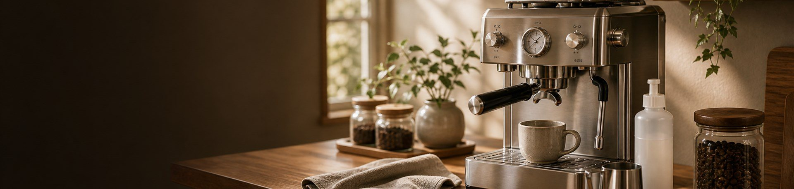
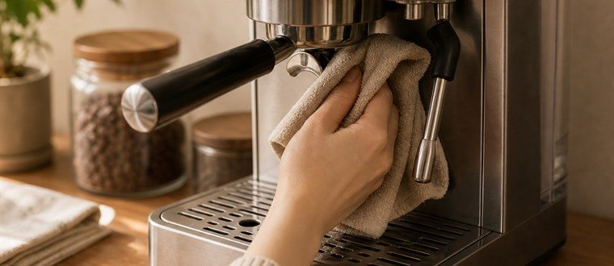
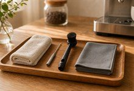

0
0그룹헤드 닦기
추출 후 그룹헤드 주변을 마른 천으로 닦아
커피 찌꺼기와 오일을 제거합니다.

매일 5분의 관리로 위생과 맛을 지켜보세요.

추출 후 그룹헤드 주변을 마른 천으로 닦아
커피 찌꺼기와 오일을 제거합니다.
사용 후 스팀을 짧게 분사한 뒤 젖은 천으로 닦아
우유 찌꺼기를 제거합니다.
드립트레이의 물과 찌꺼기를 비우고
가볍게 세척해 위생을 유지합니다.
정해진 주기로 점검하면 장비의 성능과 수명을 유지할 수 있습니다.
좋은 습관이 장비를 오래도록 최상의 상태로 유지해 줍니다.

전용 클리너와 부드러운 브러시, 마른 천을 사용하세요.
권장 주기에 따라 디스케일링으로 스케일을 제거하세요.
사용 후 전원을 끄고 물통의 물을 비워 건조한 곳에 보관하세요.
이상한 소음이나 추출 변화가 느껴지면 즉시 점검하세요.
전원을 끄고 완전히 식은 상태에서 세척해 주세요. 연마성 세제나 날카로운 도구 사용은 피해주세요.
제품 매뉴얼을 참고하여 안전하게 관리해 주세요. 정품 부품과 세척제를 사용하면 성능 유지에 도움이 됩니다.